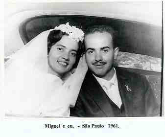
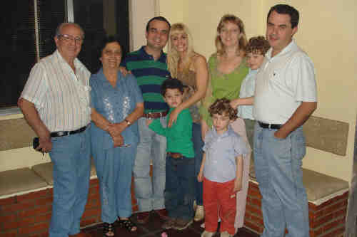
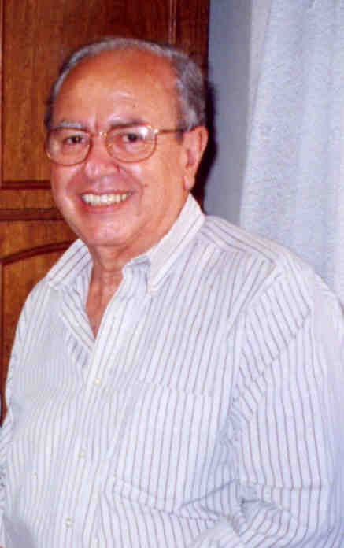

Miguel Paulo Damiani
- Nascido em: 4 Abr 1936, Belenzinho - Sp-Sp
- Casamento: Neuza Colucci em 2 Dez 1961 em Igreja Do Convento Do Carmo Em Sp

 Notas Gerais: Notas Gerais:
Sobre a pesquisa e o trabalho original de Genealogia feito pelo Miguel e pela Neuza.\tab\tab\tab
O que para muitos é um contra-senso, mas convivendo com a família exatos 51 anos, tive condições de elaborar a genealogia dos descendentes do avô Rocco Petrella.
Porém esta não é a realidade. Eu, neste trabalho, fui apenas um mero organizador, arquivista, pesquisador e coadjuvante.
A Neuza e eu percebemos, numa reunião familiar, mais ou menos no ano de 1975, que nossos pais, Michele Damiani e Marianina Petrella Colucci (filha de Rocco Petrella), possuíam uma memória prodigiosa e substancial conhecimento dos fatos e acontecimentos familiares do passado.
Surgiu a idéia de aproveitarmos essas informações para conhecermos nossos antecessores e os parentes com os quais convivemos.
Começamos a pesquisar as famílias Damiani e Petrucci (linhagem do Miguel) e famílias Colucci e Petrella (linhagem da Neuza).
Partimos da premissa de que, nas informações e "folclores" familiares, nem tudo é verídico e nem inverídico. Essas "histórias", fornecidas pelos parentes, eram fartas sobre o modo de vida no passado.
Coletamos dados, inicialmente do nosso pequeno núcleo doméstico e, depois, de parentes, amigos e aqueles que tinham o mesmo sobrenome. Lemos muitas cartas descoradas pelo tempo, examinamos documentos, olhamos com emoção e saudades velhas fotografias, procurando anotações no verso ou eventual nome, data e cidade do fotógrafo.
Na época, as informações aumentaram a tal ponto que resolvemos, então, escrever sobre a progênie da família, não apenas com o intuito de satisfazer nossa curiosidade, mas, pensando em deixarmos um esboço histórico-genealógico, aos nossos descendentes interessados em se aprofundar nos estudos das nossas origens.
Devemos mencionar que, para elaborar um relato estritamente pessoal, não nos prendemos aos esquemas rígidos. Assumimos, com amadorismo, roteiros circunstanciais, pesquisando sem pressa e curtindo as descobertas, com o mesmo prazer de um desbravador ao encontrar a trilha perdida.
Do passado, fizemos levantamentos no Brasil e na Itália.
No Brasil, consultamos:
1) Registros de Óbitos, o Departamento de Genealogia da Igreja de Jesus Cristo dos
Santos dos Últimos Dias (Igreja Mórmon) 4, o Instituto Genealógico \tab Brasileiro
e o Museu Municipal de São Carlos.
2) Não havendo ainda a Internet, com o auxílio das listas telefônicas de assinantes
de várias cidades brasileiras, enviamos correspondências a indivíduos com o mesmo
sobrenome tentando obter mais elementos para a pesquisa.
\tab
Na Itália, pesquisamos:
1) Em duas Prefeituras: comune de Mondragone e comune de Baiano, e um registro
Paroquial da comune de Campagnano di Roma, que tinha arquivos provinciais gerais.
Nos três, obtivemos os documentos procurados.
2) No ano de 1997 em Mondragone, cidade dos "nonnos" paternos do Miguel,
conversamos com pessoas idosas que ainda moravam perto da casa onde eles viveram.
Ficamos surpresos e, ao mesmo tempo, enaltecidos, pois quatro dessas pessoas
lembravam-se da nossa família, ou seja, dos nossos tios e avós.
Uma delas, o sr. Antonio Del Schiavo, residindo no "vicolo del Casalielo",
disse-nos que na infância, foi amigo dos nossos familiares.
Numa outra viagem no ano de 2000, fomos visitar a "casa paterna". Os moradores
atuais, (família Bertolino Amato) além de contarem coisas e fatos que sabiam dos
nossos parentes, tornaram-se amigos especiais.
O mesmo aconteceu na Comune de Baiano, ( provícia de Avelino) cidade dos "nonnos"
paternos da Neuza. Localizamos os parentes da primeira filha do nonno Stefano
Colucci, e além disso fizemos amizade que perdura até hoje, com a família de Michele
Napolitano.
C. as. Nossos antepassados saíram da Itália com destino ao Brasil:
Damiani em 1927,
Colucci em 1890, e mesmo assim, foram recordados.
3) Por último, trocamos correspondências com o Centro di Ricerca Storico Araldica e
Genealogico, em Firenze, e com o Istituto Genealogico, em Roma.
Já, em 1998 havíamos editado as genealogias e histórias das Famílias Damiani
Petrucci e Colucci.
Relatamos todos estes fatos para demonstrar que além de pesquisar, procurar informações in loco, trocar correspondências com orgãos oficiais, parentes e pessoas com os mesmos sobrenomes nós não caminhamos no escuro.
Conseguimos muitos conhecimentos e informações sobre a família Petrella, mas não podíamos editar a sua genealogia porque não conseguíamos obter dados de algumas famílias contemporâneas, e isso se prolongou até o final de 2004.
As contradições:
1- graças a nossa querida Marianina possuíamos a progênie de ascendência do seu \tab pai,
avô e bisavô.
2- possuíamos também duas certidões de nascimento, obtidas através de microfilmes do
Departamento de Genealogia da Igreja de Jesus Cristo dos Santos dos Últimos Dias (Igreja
Mórmon): "Maria Luigia Di Simone" -mãe do avô Rocco, (anexo 1) e "Panfilo
Antonio di Bacco" - pai da avó Filomena, (anexo2), ambos da Comune di Pratola.
3-Através da Internet, conseguimos várias ramificações familiares até o ano de 1726,
e o melhor: elas ratificaram as informações já obtidas. Sabemos que para fazer
uma pesquisa na mídia digital, a primeira regra é manter um saudável ceticismo. Se
a sua informação da Internet parece ser a resposta para a sua prece, duvide.
Tais fontes são só orientações. Deve-se confirmar cada detalhe. Por isso a nossa
alegria, no decorrer do trabalho, de percebermos que os nomes e datas obtidos
encaixavam-se perfeitamente nas informações familiares.
Resolvemos então pedir auxílio novamente para vários parentes, e finalmente
conseguimos as poucas informações que estavam faltando.
Obtivemos apenas nomes completos e datas mas nos consolamos, porque é melhor pouco do que nada.
A nossa idéia era fazer igual aos outros trabalhos, ou seja, a História da Família.
\tab
Procuramos coletar o maior número possível de elementos, mas, se algum fato ou data importante deixaram de ser mencionados, foi por absoluta falta de conhecimento de nossa parte e por não colaboração de quem sabia.
Quando possível, ilustramos com fotos cada ramo familiar, com a finalidade de:
> relembrarmos os entes queridos;
> apresentarmos um registro da imagem dos nossos semblantes aos familiares do
presente e do futuro (atualmente, vários parentes não se conhecem);
> comparação das semelhanças físionômicas;
> evidenciar diferentes modas e costumes.
\tab
Analisando-se o estudo Genealógico de uma estirpe, sob o prisma da hereditariedade, ficaremos apaixonados pelo que ele revela. Após várias gerações, as características genéticas entre os membros de cada família reaparecem. É um olhar, uma feição, um perfil, uma personalidade.
Além disso, os fatos da vida cotidiana servem para caracterizar a pessoa e o seu contexto social.
Afinal, a Genealogia de uma família não se restringe à elaboração de sua Árvore, pois o ser humano é mais do que um simples nome numa lista de parentesco.
Cada pessoa tem uma história que reflete o seu tempo e os lugares onde viveu.
Neste sentido, como biografar nossos antecessores sem retratar a pequenina cidade de Pratola Peligna?
Como resumir a vivência deles e a nossa em São Paulo, sem narrar as condições de vida no passado?
Pedimos que considerem o que foi feito e não o que deixou de ser feito. Lembrem-se que, neste tipo de pesquisa, o pesquisador transcreve apenas o que lhe é dado ler e constatar.
Gostaríamos que a partir dele mais pessoas se interessassem e fizessem a complementação da História da Família Petrella.
Ao questionarmos os parentes sobre a progênie, recebemos apoio e compreensão da maioria, mas alguns não nos entenderam.
O presente trabalho não é perfeito como não o é nenhuma Genealogia familiar, mas é honesto e consciencioso. No entanto, humildemente, receberemos as críticas, aguardando, neste meio tempo, que os censores nos forneçam subsídios para as devidas complementações ou correções.
Aos que colaboraram, os nossos agradecimentos
------------------------------------------------------------------------------------------------------------
Método da pesquisa genealógica
Antecedendo às perguntas que provavelmente seriam feitas, inclusive sobre a confiabilidade das informações que apresentamos, vamos explicar o nosso método de trabalho e o raciocínio para a trajetória da ascendência até Nunzio Petrella (* 1772).
Do sobrenome Petrella, durante vários anos, pesquisamos:
1° com os familiares mais antigos, inclusive com Marianina que dizia que:
seus pais eram o
Rocco Petrella casado com a Filomena di Bacco,
e seus avós eram
Gaetano Petrella casado com Luigia di Simone e
Panfilo Antonio di Bacco casado com Maria Giuseppa Candida Spadafora.
Para ratificar tal declaração existe a sua Certidão de Nascimento onde estes dados estão
descritos.
\tab
Consta nas Certidões de Nascimento dos primos Nelson Petrella, Haydee Petrella,
Oswaldina Vian, Roque Petrella (que conviveram com a avó Filomena) e também na da
Neuza Colucci, que seus avós eram Rocco Petrella e Filomena di Bacco (que
depois de casada, passou a usar Filomena Petrella).
\tab
2° diretamente nos microfilmes da Igreja Mórmon (Centro de História da Família) 4.
C.as. Para quem não sabe, a Igreja possui uma das maiores bibliotecas genealógicas do mundo. Sob a direção do Departamento de História da Família, a Igreja e seus membros tem reunido milhões de volumes, contendo registros de nascimento, casamento, morte e outros.
Hoje, centenas de milhões de registros microfilmados estão disponíveis para pesquisa. A biblioteca é aberta ao público e está situada nos arredores da histórica Praça do Templo, no centro da Cidade do Lago Salgado em Utah (USA).
Cópias dos registros estão protegidas num depósito subterrâneo escavado sob uma sólida montanha de granito, num desfiladeiro, perto da Cidade do Lago Salgado. A caverna protege permanentemente estes valiosos registros de qualquer catástrofe natural e preserva-os em condições apropriadas de armazenagem.
Há também centenas de centros de história da família espalhados pelo mundo. No Brasil, existem atualmente 48 destes centros.
Neste Departamento, além de ver os microfilmes dos documentos originais, dependendo
do acúmulo do serviço, pode-se obter xerocópias dos mesmos.
Se houver alguém interessado em continuar as pesquisas, abaixo passamos a relação dos microfilmes que examinamos.
FICHA 6 Pratola Peligna período 1809-1865 (nascimento - notificação - morte)
nome\tab período da busca\tab n° microfilme\tab
Gaetano Petrella (nascimento)\tab 1817 -1818\tab 1386796
Rocco Petrella (nascimento) \tab 1861\tab 1353600
Filomena di Bacco (nascimento)\tab 1862\tab 1353601
Pampilo Antonio di Bacco (nascimento\tab 1821\tab 1386797
Nascim. Notif. Mort . Casam.\tab 1809\tab 1386706
Nascim. Notif. Mort . Casam.\tab 1809\tab 1386707
Nascim. Notif. Mort . Casam.\tab 1810\tab 1386708
Nascimentos\tab 1861\tab 1424362
Maria Luigia di Simone (nascimento)\tab 1821\tab 1386797\tab
3° No sites:
Lettopalena /Abruzzo Genealogy
Lettopalena /Pratola Peligna Genealogy
My Italian Family / Italian Genealogy
Genealogy Data Page
Surname Navigator Italy
4° Atendendo ao pedido que o Nelson Petrella fez numa das viagens à terra Paterna, e a carta enviada pela Ana Petrella (Aninha), a "prima" Marfisa que mora em Pratola Peligna, pesquisou diretamente nos arquivos da Comune.
Lá a ascendência que consta é:
" Dalle ricerche fatte negli archivi Comunali si é riscontrato quanto segue:
A) fratelli e sorella:
1)\tab Petrella\tab Nunzio\tab nato\tab il\tab 06- 07-1884\tab
2)\tab Petrella\tab Gaetano\tab "\tab "\tab 06- 11-1887\tab
3)\tab Petrella\tab Ercole\tab "\tab "\tab 19-10-1890\tab
4)\tab Petrella\tab Erminia\tab "\tab "\tab 19-03-1893\tab
B) padre e madre dei predetti:
1) Petrella Rocco nato il 28-8-1861
2) Di Bacco Filomena nata il 13-5-1862
C) nonni di Nunzio:
1) Petrella Gaetano nato il 25-8-1818
2) Di Simone Luigia di anni 40
D) bisnonni di Nunzio:
1) Petrella Nunzio di anni 46
2) Vallera Maddalena di anni 40
Per i bisnonni non esistono gli atti di nascita. Se si vogliono avere altri dati di parenti materni me lo farete sapere.........."
N. as. Notar que na pesquisa cita Nunzio di anni 46 e Maddalena di anni 40.
Era costume na Certidão, o oficial do registro Civil colocar a idade do pai (declarante) e da mãe. Se considerarmos o nascimento do Gaetano Petrella em 1818, Nunzio (o pai declarante que tinha 46 anos) nasceu em 1818 - 46 = 1772, e a mãe Maddalena Vallera nasceu em:
1818 - 40 = 1778.
Ela escreve também que para os bisnonos (Nunzio e Maddalena) não existem na Comune as certidões de nascimento, sendo apenas citados como pais, no registro do filho Gaetano.
Com estas comprovações, (e sem nenhuma dúvida) chegamos até
Nunzio Petrella (*1772) casado com Maddalena Vallera (*1778).
As outras ramificações provenientes das partes maternas foram conseguidas com microfilmes (Mórmon) e Internet e encaixaram-se perfeitamente na linhagem.
Eventos notáveis em Sua vida foram:

• fotos: Neuza e Miguel.

• fotos: Miguel -Neuza- Ibsen -Claudia -Enrico -Patricia -Erik -Andrei -Abner.

• fotos: Miguel.
Miguel casad[:o::a] Neuza Colucci, filha de Eugênio Colucci e Marianina Petrella, em 2 Dez 1961 em Igreja Do Convento Do Carmo Em Sp. (Neuza Colucci nasceu em em 20 Nov 1938 em Brooklin, Sp.)
|